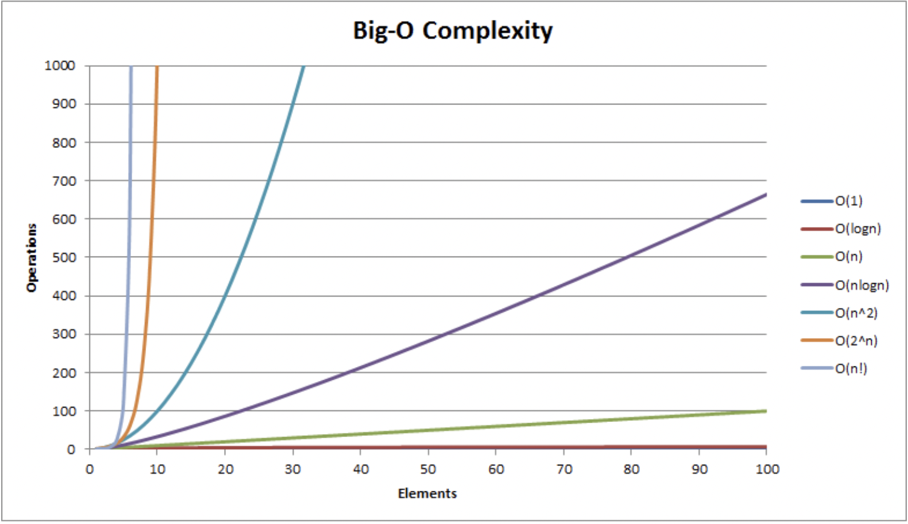

<meta charset="utf-8">
<html lang="ko">
<head>
    <link rel="stylesheet" type="text/css" href="./../style.css" />
    <title>Chap01. 자료구조와 알고리즘의 이해</title>
</head>
<body id="tt-body-page" class="">
<div id="wrap" class="wrap-right">
    <div id="container">
        <main class="main ">
            <div class="area-main">
                <div class="area-view">
                    <div class="article-header">
                        <div class="inner-article-header">
                            <div class="box-meta">
                                <h2 class="title-article">Chap01. 자료구조와 알고리즘의 이해</h2>
                                <div class="box-info">
                                    <p class="category">윤성우의 열혈 자료구조</p>
                                    <p class="date">2022-04-04 14:32:07</p>
                                </div>
                            </div>
                        </div>
                    </div>
                    <hr>
                    <div class="article-view">
                        <div class="contents_style">
                            <p data-ke-size="size16">&nbsp;</p>
<h2 data-ke-size="size26"><b>빅오에 대한 수학적 접근</b></h2>
<p data-ke-size="size16">- 빅오의 수학적 정의:</p>
<p data-ke-size="size16">두 개의 함수<b> f(n)과 g(n)</b>이 주어졌을 때, 모든 <b>n &gt;= K</b>에 대하여<b> f(n) &lt;= Cg(n)</b> 을 만족하는 두 개의 상수 C, K가 존재한다면 f(n)의 빅오는 <b>O(g(n))</b>이다.&nbsp;</p>
<p data-ke-size="size16">&nbsp;</p>
<p data-ke-size="size16">- 다르게 말하면<b> n이 충분히 커졌을때 f(n)보다 상수 C를 곱한 g(n)가 절댓값이 더 커지게 된다면, f(n)의 빅오는 O(g(x))</b>이다.&nbsp;</p>
<p data-ke-size="size16">&nbsp;</p>
<p data-ke-size="size16">일단 f(n)의 빅오가 O(g(n))인지의 판단은 그냥 C, K에 임의의 숫자를 넣어서 대입해보면 된다.&nbsp;</p>
<p data-ke-size="size16">여러 숫자들을 대입해봐서 성립하는게 있다면 f(n)의 빅오는 O(g(n))이라는것을 판단할수 있다.&nbsp;</p>
<p data-ke-size="size16">&nbsp;</p>
<p data-ke-size="size16">다음 두 함수 f(n), g(n)이 있을때 f(n)의 빅오가 O(g(n))인가?&nbsp;</p>
<p data-ke-size="size16">&nbsp;</p>
<p data-ke-size="size16"><b>f(n) = 5n^2 + 100</b></p>
<p data-ke-size="size16"><b>g(n) = n^2&nbsp;</b></p>
<p data-ke-size="size16">&nbsp;</p>
<p data-ke-size="size16">K = 12, C = 3500이라고 하면&nbsp;</p>
<p data-ke-size="size16">&nbsp;</p>
<p data-ke-size="size16">f(n) &lt;= Cg(n)&nbsp; &nbsp; &nbsp; &nbsp; &nbsp;==&gt;&nbsp; &nbsp; &nbsp; &nbsp; &nbsp; &nbsp; 5n^2+100 &lt;= 3500n^2&nbsp;</p>
<p data-ke-size="size16">&nbsp;</p>
<p data-ke-size="size16">n에 숫자를 대입해보면 위 방정식이 옳다는 것을 알수 있다.</p>
<p data-ke-size="size16">따라서 f(n)의 빅오는 O(g(n))이 맞다.</p>
<p data-ke-size="size16">&nbsp;</p>
<p data-ke-size="size16">&nbsp;</p>
<p data-ke-size="size16">그런데 <b>상수 C, K를 정할때 3500처럼 큰 숫자로 잡아도 상관이 없다.&nbsp;</b></p>
<p data-ke-size="size16">&nbsp;</p>
<p data-ke-size="size16">먼저 n &gt;= K에서 <b>K를 크게 잡아도 상관없는 이유는&nbsp; n값이 증가하다가 어느 순간 이후부터만 f(n) &lt;= Cg(n)을 만족하면 되기 떄문</b>이다.</p>
<p data-ke-size="size16">&nbsp;</p>
<p data-ke-size="size16">그리고<b> C를 크게 잡아도 상관없는 이유는</b> f(n) = 5n^2 + 100 을 생각해보자. f(n)의 빅오는 O(n^2)이다.&nbsp;</p>
<p data-ke-size="size16">빅오는 함수의 증가율의 상한선을 표현하는데, 여기서 C가 아무리 크더라도 결국 증가율이 n^2의 증가율을 넘어설수 없기 때문이다.&nbsp;</p>
<p data-ke-size="size16">&nbsp;</p>
<hr contenteditable="false" data-ke-type="horizontalRule" data-ke-style="style3" />
<p data-ke-size="size16">책의 내용을 읽어봐도 완전히 이해가 안가서 검색을 좀 더 해봤다.</p>
<p data-ke-size="size16"><a href="https://dev-nicitis.tistory.com/3">https://dev-nicitis.tistory.com/3</a></p>
<figure id="og_1649050210798" contenteditable="false" data-ke-type="opengraph" data-ke-align="alignCenter" data-og-type="article" data-og-title="초심자를 위한 알고리즘과 자료구조 2편 - 알고리즘의 효율성, 시간 복잡도, 빅오 표기법(Big-O Nota" data-og-description="- 해당 글은 비전공자 혹은 개발 초심자를 대상으로 하는 글입니다. 다소 비전문적이고 구어체에 가까운 표현이 등장하더라도 양해 부탁드립니다. - 이번 글은 수학적 정의를 포함하고 있습니다" data-og-host="dev-nicitis.tistory.com" data-og-source-url="https://dev-nicitis.tistory.com/3" data-og-url="https://dev-nicitis.tistory.com/3" data-og-image="https://scrap.kakaocdn.net/dn/bsE3BK/hyNVL6LOr2/11XQAdodG4PXCZlTn6crv1/img.png?width=800&amp;height=636&amp;face=0_0_800_636,https://scrap.kakaocdn.net/dn/cEhrOW/hyNVPORSeS/c0kbdRwC0jznJjCZTL8W3K/img.png?width=800&amp;height=636&amp;face=0_0_800_636"><a href="https://dev-nicitis.tistory.com/3" target="_blank" rel="noopener" data-source-url="https://dev-nicitis.tistory.com/3">
<div class="og-image" style="background-image: url('https://scrap.kakaocdn.net/dn/bsE3BK/hyNVL6LOr2/11XQAdodG4PXCZlTn6crv1/img.png?width=800&amp;height=636&amp;face=0_0_800_636,https://scrap.kakaocdn.net/dn/cEhrOW/hyNVPORSeS/c0kbdRwC0jznJjCZTL8W3K/img.png?width=800&amp;height=636&amp;face=0_0_800_636');">&nbsp;</div>
<div class="og-text">
<p class="og-title" data-ke-size="size16">초심자를 위한 알고리즘과 자료구조 2편 - 알고리즘의 효율성, 시간 복잡도, 빅오 표기법(Big-O Nota</p>
<p class="og-desc" data-ke-size="size16">- 해당 글은 비전공자 혹은 개발 초심자를 대상으로 하는 글입니다. 다소 비전문적이고 구어체에 가까운 표현이 등장하더라도 양해 부탁드립니다. - 이번 글은 수학적 정의를 포함하고 있습니다</p>
<p class="og-host" data-ke-size="size16">dev-nicitis.tistory.com</p>
</div>
</a></figure>
<p data-ke-size="size16">위 블로그 글을 읽고 좀 더 정리해 본다.</p>
<p data-ke-size="size16">&nbsp;</p>
<p data-ke-size="size16">&nbsp;</p>
<p data-ke-size="size16">처음에 빅오의 정의가 다음과 같다고 했다.</p>
<p data-ke-size="size16">&nbsp;</p>
<p data-ke-size="size16"><b><span>&nbsp;</span>n이 충분히 커졌을때 f(n)보다 상수 C를 곱한 g(n)가 절댓값이 더 커지게 된다면, f(n)의 빅오는 O(g(n))</b>이다.&nbsp;</p>
<p data-ke-size="size16">&nbsp;</p>
<p data-ke-size="size16">이 정의를 생각해보면 n이 일정값 이상이 됐을때, f(n)의 그래프가 cg(x)의 그래프보다 항상 아래 있다면 f(n) = O(g(n))이라는 것이다!</p>
<p data-ke-size="size16">즉 빅오는 함수의 증가율의 상한선을 표현한다는 것을 알 수 있다.&nbsp;</p>
<p data-ke-size="size16">&nbsp;</p>
<p data-ke-size="size16">최종적으로 내가 이해한바에 따르면&nbsp;</p>
<p data-ke-size="size16"><b>f(n)의 빅오가 O(g(n))이라면, n&gt;=k일때 f(n)은 항상 g(n) 그래프보다 아래있을 것이고, 이는 n값이 아무리 증가해도 f(n) 그래프가 g(n)보다 아래 있다는 것이며, 따라서 빅오 표기법이 f(n) 함수의 증가율의 상한선을 표현한다는 것이다.&nbsp;</b></p>
<p data-ke-size="size16">&nbsp;</p>
<p data-ke-size="size16">&nbsp;</p>
<p><figure class="imageblock alignCenter" >
    <span data-lightbox="lightbox">
        
    </span>
    <figcaption>https://www.hackerearth.com/practice/notes/big-o-cheatsheet-series-data-structures-and-algorithms-with-thier-complexities-1/</figcaption>
</figure></p>
<p data-ke-size="size16">즉 이런거다.</p>
<p data-ke-size="size16">내가 어떤 함수를 만들었는데 이 함수가 f(n)이다.&nbsp;</p>
<p data-ke-size="size16">이 함수 f(n)의 빅오를 구하고 싶다.&nbsp;</p>
<p data-ke-size="size16">그것이 뭔지 모르겠지만 빅오는 위의 그래프의 O(1), O(logN), O(N) ... 중 하나일 것이다.&nbsp;</p>
<p data-ke-size="size16">위의<b> 빅오의 수학적 판별법에 따라 f(n)의 빅오가 만약 O(N)이라고 판별됐다면 f(n)의 그래프는 N &gt;= K 일때 O(N)의 그래프 아래에 있다</b>는 것이고<b> O(N)의 그래프가 f(N)의 증가율의 상한선을 나타낸다</b>고 볼 수 있을 것이다.&nbsp;</p>
<p data-ke-size="size16">&nbsp;</p>
<p data-ke-size="size16">&nbsp;</p>
<p data-ke-size="size16">&nbsp;</p>
<p data-ke-size="size16">여기까지가 내가 이해한 빅오의 정체다. 틀린 부분이 있을수도 있겠지만 빅오를 좀더 깊이 알게 된것 같다.</p>
<p data-ke-size="size16">아직 백퍼센트 확실히 빅오를 다 안다고 할수는 없겠지만 이번에 공부하면서 내가 원래 알던 부분에서 좀더 범위를 확장할수 있었던 것 같다. (빅오는 증가율의 상한선을 표현하는 표기법이라는 면)&nbsp;</p>
                        </div>
                        <br/>
                        <div class="tags">
                            #자료구조 
                        </div>
                    </div>
                </div>
            </div>
        </main>
    </div>
</div>
</body>
</html>
